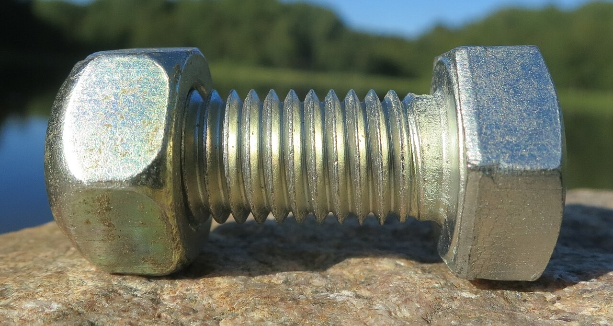
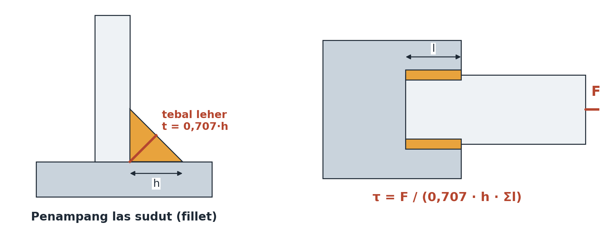

Pertemuan 13 · Sub-CPMK 4.2 · Baut, keling, las + 4 contoh soal

At: M8=36,6; M10=58,0; M12=84,3; M16=157; M20=245 mm².
Contoh 1: M12 8.8 (At=84,3, Sp=600) → Fp=50.580 N; Fi=0,75×= 37,9 kN; T=0,2×37.935×0,012=91 N·m. Preload mencegah renggang/geser, menahan lelah, anti-kendor.
Beban: tarik σ=F/(n·At); geser τ=F/(n·A); tumpu σb=F/(n·d·t); n=Sy/σ atau Ssy/τ ≥ nd=2.
Contoh 2 (tarik): 4×M10 4.6, F=20 kN → 5.000/baut; σ=5.000/58=86,2 MPa; n=240/86,2=2,78 ≥ 2 ✓.
Periksa: geser keling, tumpu, tarik pelat, sobek tepi (tepi ≥1,5–2d aman tanpa hitung).
Contoh 3: F=12 kN, 2 keling d=10 (t=6, w=50; pelat Sy=250; keling Ssy=127): geser τ=12.000/157=76,4 → n=1,66 ✗; tumpu σb=12.000/120=100 → n=2,5 ✓; tarik pelat σ=12.000/240=50 → n=5,0 ✓ → ganti d=12: τ=53,1 n=2,39 ✓ tumpu n=3,0 ✓ AMAN.
Contoh 4: F=40 kN, 2 las h=6 l=50 → A=0,707×6×100=424 mm²; τ=40.000/424=94,3; Ssy=199; n=2,11 ≥ 2 ✓ (h=5 → n=1,76 ✗).
Cacat: retak, porositas, kurang penetrasi, undercut, terak → konsentrasi tegangan → retak lelah. Kendali: WPS, juru las bersertifikat, inspeksi visual/penetran, K3.
Mesin pencacah: las dudukan motor F=250+512=762 N; 2 las h=4 l=60 → A=339; τ=2,2; n=88,7 ✓ (mutu las lebih menentukan daripada angka).

Mengapa 2 keling Ø10 gagal tetapi Ø12 lolos? Mode apa yang kritis?
Baut pisau pencacah n=28,6 — apakah berarti boleh diperkecil? Apa risikonya?
Disusun dari 8 PPT kuliah + RPS Desain Komponen Mesin (3MES40016), Prodi Pendidikan Teknik Mesin FT Unimed. Rujukan: Shigley et al. (2015), Mott (2018), Juvinall & Marshek (2020), Sularso & Suga (2004).